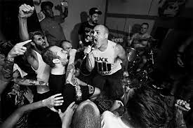

.::Los Crudos::.
¡Bienvenidos a nuestra página web dedicada a la legendaria banda de hardcore punk, Los Crudos! Aquí encontrarás todo lo que necesitas saber sobre esta icónica agrupación que ha dejado una huella indeleble en la escena musical.
En esta página web encontrarás una completa biografía de Los Crudos, desde sus humildes comienzos hasta su impacto duradero en la música punk. También podrás explorar su discografía, con detalles sobre cada álbum y sus canciones más destacadas. Además, te presentaremos al personal detrás de la banda, quienes han dejado una huella imborrable en la historia del punk.